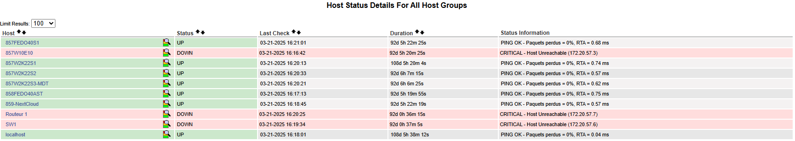

Supervision d'Infrastructure avec Nagios
Contexte
Ce projet a consisté à installer et configurer Nagios pour la supervision des services et du matériel informatique. Nous avons installé Nagios sur un serveur Linux Fedora et configuré les agents SNMP sur des machines Linux et Windows, ainsi que l'agent NSClient++ pour superviser les services et matériels.
Installation et Configuration
Nous avons commencé par installer Nagios sur un serveur Fedora, puis nous avons personnalisé les fichiers de configuration pour surveiller les services spécifiques et les équipements matériels via SNMP, y compris des équipements CISCO.
Tests et Validation
Des tests ont été effectués pour valider que la configuration de Nagios, des agents SNMP, et des addons comme NagiosGraph fonctionnaient correctement. Des alertes ont été testées pour s'assurer que le système de supervision réagissait en cas de défaillance.
Retour Personnel
Ce projet m'a permis de découvrir l'outil de supervision Nagios et de comprendre son fonctionnement. J'ai appris à installer et configurer Nagios, ce qui m'a permis de mettre en pratique mes compétences en gestion du patrimoine informatique.